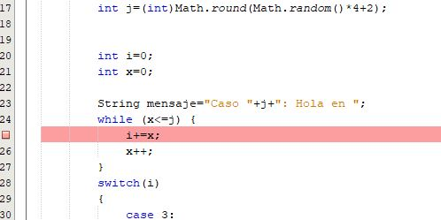
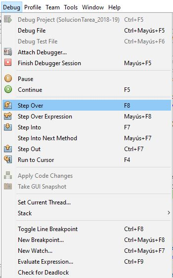

6.2.- Depurando código Java con Netbeans.
A continuación tienes un breve resumen descriptivo de las opciones más habituales que se pueden llevar a cabo durante un proceso de depuración básico con Netbeans.
Para depurar un archivo o un proyecto, puedes usar el menú de depuración o bien el menú contextual de cada pestaña de código Java. Imagina que tienes abierto el archivo "Ejercicio1.java", el menú general de depuración podría aparecer así (puede haber variaciones dependiendo de la versión de Netbeans que se utilice):

Para comenzar a depurar podemos elegir una de estas dos opciones:
- Debug Project o Depurar Proyecto iniciará la depuración del proyecto y se detendrá cuando encuentre un punto de ruptura. En todo proyecto hay un archivo
.javaprincipal, que será el que se depurará al seleccionar esta opción. - Debug File iniciará la depuración de un archivo
.javaconcreto, concretamente el que estemos editando en ese momento, deteniéndose en cuanto encuentre un punto de ruptura. Esta será la opción que usaremos en nuestro caso.
Para establecer un nuevo punto de ruptura (breakpoint) lo más sencillo es hacer clic en sobre el número de línea, aunque también puedes usar la opción de menú Toggle Line Breakpoint o su atajo de teclado equivalente:

Una vez que se inicia la depuración y/o se alcanza un punto de ruptura, la opción de "Step Over (F8)" o "Continuar Ejecución (F8)" está disponible. Esta opción permitirá ir ejecutando el código sentencia a sentencia, sin entrar en ningún método que se pudiera invocar. La opción "Step Into (F7)" o "Paso a paso (F7)" sí que permitiría ejecutar paso a paso cualquier método que se invoque, entrando dentro del código del método en cuestión (eso lo veremos más adelante, cuando aprendamos a implementar clases y métodos). Pero para el propósito de la tarea de esta unidad, de momento, es suficiente con "Step Over (F8)":

Por último, para observar el valor de las variables en un momento concreto de la ejecución tenemos la ventana "Variables" de NetBeans. Si esta ventana no te aparece puedes mostrarla accediendo al menú "Window > Debugging > Variables":

Debes conocer
Para completar tus conocimientos sobre la depuración de programas, te proponemos los siguientes enlaces en los que podrás encontrar cómo se llevan a cabo las tareas básicas de depuración a través del IDE NetBeans.
Depuración básica en NetBeans.
Uso básico del depurador en NetBeans.
A continuación te mostramos un vídeo introductorio a la depuración de programas.
Depurando con NetBeans.
Para saber más
Si deseas conocer algo más sobre depuración de programas, pero a un nivel algo más avanzado, puedes ver el siguiente vídeo.
Debugging avanzado en NetBeans.